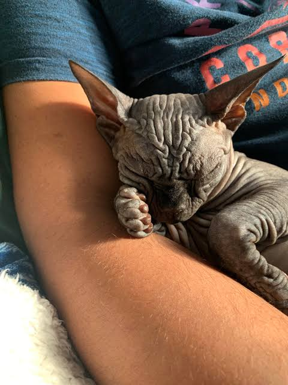
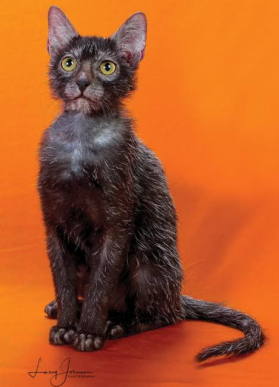
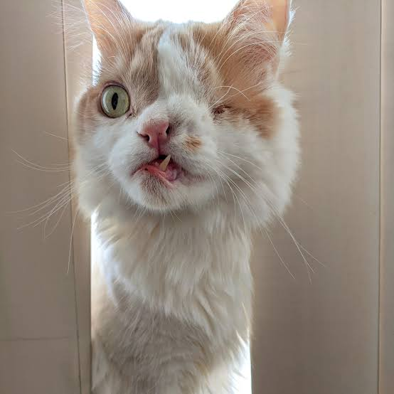
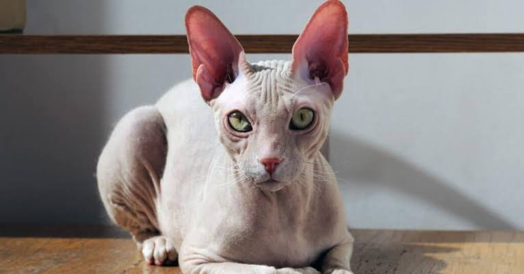

1 - Le Sphynx
Chat nu • Canada
Dépourvu de pelage et couvert de plis profonds, le Sphynx affiche un air perpétuellement renfrogné qui lui donne des allures de petite gargouille fripée.
Parce que la beauté intérieure compte aussi (même quand on ressemble à un gremlin).

Chat nu • Canada
Dépourvu de pelage et couvert de plis profonds, le Sphynx affiche un air perpétuellement renfrogné qui lui donne des allures de petite gargouille fripée.

Chat loup-garou • États-Unis
Avec son pelage clairsemé gris-noir et son museau dépourvu de poils autour des yeux, ce chat est surnommé le « chat loup-garou ».

Chat de gouttière • Star du web
Un seul œil grand ouvert, une dent inférieure qui dépasse en permanence et un air de vieux loup de mer : un charme totalement atypique.

Rex à poil frisé • Royaume-Uni
Avec son crâne ovoïde, ses immenses oreilles de chauve-souris et son poil ultra-court ondulé, il semble tout droit sorti d'un film de science-fiction.